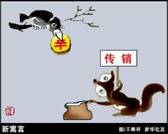
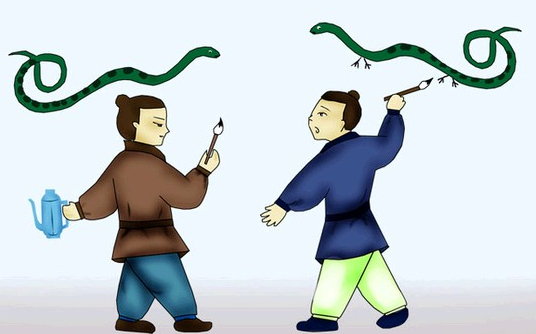
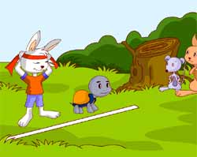
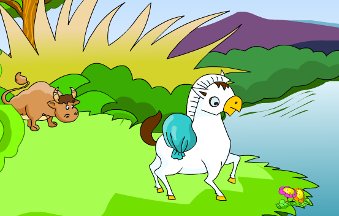
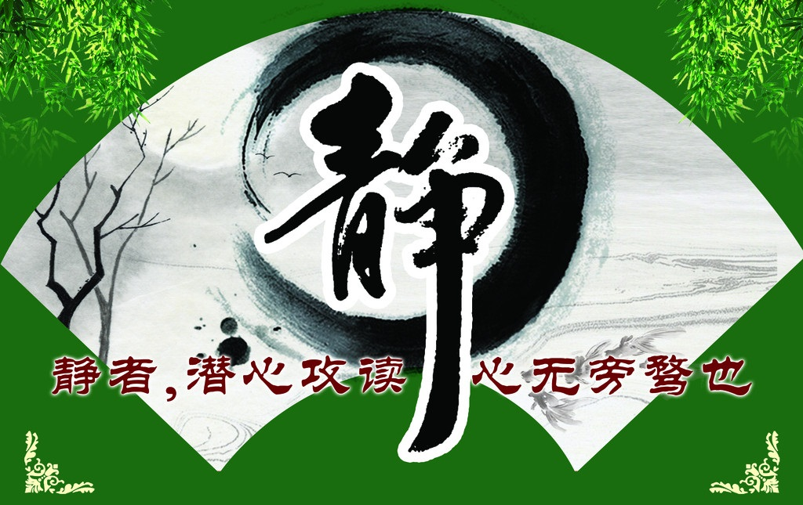
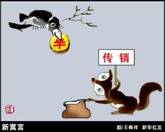
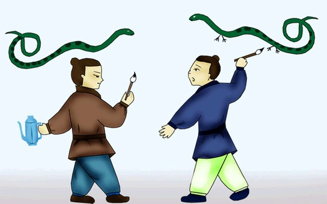
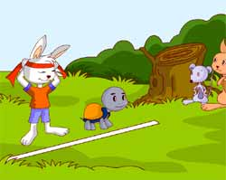
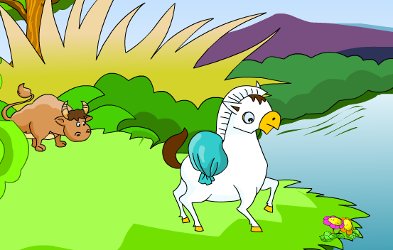

好看的图片

好看的图片

好看的图片
画蛇添足

好看的图片
龟兔赛跑

小马过河

愚公移山
周乐乐 2016-3-14
91岁的叶嘉莹女士曾表示：她喜欢多些安静的时间，多读些好书，多些静思，多些与先哲的神交。百岁高龄的杨绛先生守静功力更是了得，她和钱钟书在春节也一样专注学问，面对前来拜年的客人只透过门缝寒暄几句，没有让客人进屋，有些不近人情。正是因为有了这种超常守静的功力，才铸成大美之作。
“动静等观”
人的生命与动密不可分，生活中要有动态美，但不能过，更不能变味。追求动态美更不能演变成：公共场所的喧嚣，极尽显露能事的夸张动作，声嘶力竭的吼叫，酒桌上的推杯换盏，资讯的有量无质。这都属于厚动薄静，不具有持久的生命力。
守静能安
韩国的一项长期跟踪实验显示：长期身处节奏过快、喧嚣的环境，少年易有注意力不集中、多动症等疾患，成年人逻辑推理能力会弱化，主管短期愉悦的细胞会更活跃。美国的脑科学研究也证实：长期守静有利于神经细胞轴突的延长，有利于信息在脑细胞中的存储、分辨、比较与联系，有利于提升记忆力、分析力、判断力与决策力。这些恰恰应验了“水静极而形象明，心静极而智慧生”“非宁静无以致远，非淡泊无以明志”等诸多中华古训。
守静以削冗举要信息爆炸的当今，削冗力、举要力至关重要。此力不举，个人就无法从杂乱的海量信息中甄别出主信息与有效信息。此力足，主信息得以甄别，有效信息得以链接，创新性认知易得，大美之作可成。而削冗力、举要力、甄别力、链接力的提升无一不需要守静。万万不可因占有信息的过于求多而挤没了“思”的时间，车多而不管理堵路，信息多而不整理堵心，学而不思则罔。过多的信息缺乏整理，带来的只能是负效用。只有在“不窥牖，见天道”的守静中方能带来创新与突破。
守静以求“信息一致”神经生物学进一步证实，注重整理信息使头脑中信息得以一致，不但有益于认知创新，而且有益于提升积极情绪占比。杨绛百岁时感言：我们曾如此期盼外界的认可，到最后才知道世界是自己的。人生最曼妙的风景，竟是内心的淡定与从容。谁得“内在信息一致”之法，谁就得“真实幸福”之道。

守静而“无不为”，“大音希声，大象无形”。叶、杨两位大师因守静有了大为，并得人生之大乐。“重为轻根，静为躁君”，环境略显喧嚣时，多些静，或许更好。
原文转自乐读网
作者摘抄，仅供娱乐
周乐乐 2016-3-14
人通常一旦失去什么，就会害怕，“未来还会再失去吗？”无法褪去的记忆与惊恐，使人的灵魂永远藏着黑暗。一道又一道的刻痕，在时间岁月的累积中，我们失去信赖的能力，失去善良的能力，失去快乐的能力。每一道过往的刻痕，折叠着随时的怨、恨、愤以及攻击。
因为，我们太“想念”自己的“痛苦”。“施特劳斯”有一双蓝眼睛，我前一只流浪狗“肖邦”死后7日，遇见并收养了它。
我以为流浪狗必然是阴郁的，然而它比我想象的快乐、自信，只跳“圆舞曲”。一个没有烦恼，懂得舍离“过往”的动物。
“黑夜原是为爱而生，白昼转眼就会回来”，这是拜伦的诗句，也是大自然的规律。人到一个时间，就要开始学会断、舍、离。若没“福气”得阿兹海默症，也要想办法拥有“遗忘”的能力。
原文转自乐读网
作者摘抄，仅供娱乐
好看的图片

好看的图片
好看的图片
画蛇添足

好看的图片
龟兔赛跑

小马过河

愚公移山
周乐乐 2016-3-14
| 序号 | 姓名 | 操作 |
|---|---|---|
| 01 | 大白菜 | 审核 |
| 02 | 土豆 | 审核 |
| 03 | 西红柿 | 审核 |
| 04 | 黄瓜 | 审核 |
| 05 | 芹菜 | 审核 |